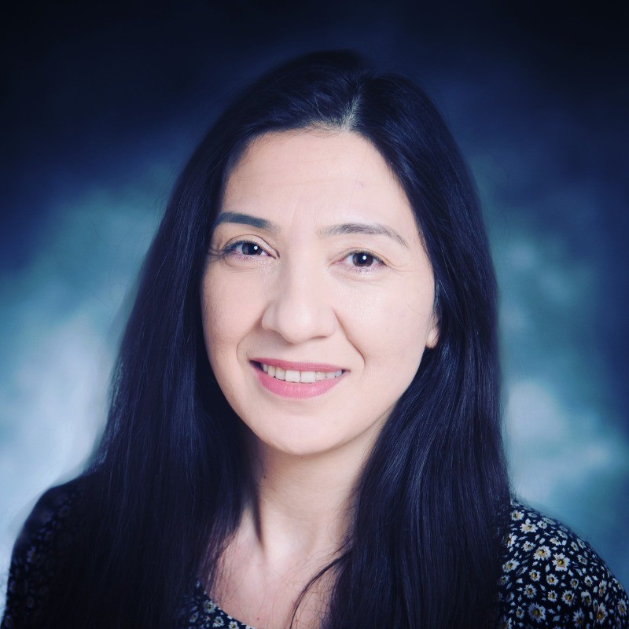
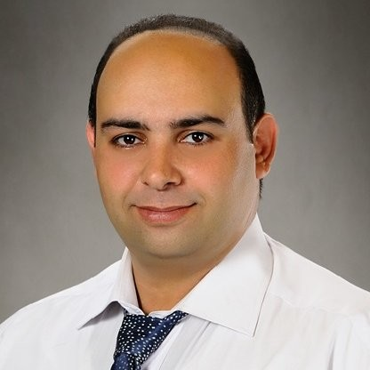

Dr. Maryam Shirinzad

Dr. Maryam Shirinzad is a transportation engineer and data scientist with over 17 years of international experience. Her expertise spans traffic operations, simulation, human factors, pedestrian safety, infrastructure assessment, and data science applications in transportation. Dr. Shirinzad has led or contributed to numerous research projects sponsored by FHWA, NCHRP, TxDOT, MnDOT, and other public and private agencies. Her work often involves complex data processing, human subject testing, and advanced analytics to improve roadway safety and usability for all users.
Dr. Yashar Talebi

Dr. Yashar Talebi is a biostatistician and data scientist with a medical background and extensive experience in public health research. His expertise includes clinical trial design, advanced statistical modeling, Bayesian methods, and the integration of electronic health records for large-scale analysis. Dr. Talebi has contributed to multi-institutional research projects focused on health outcomes, epidemiology, and health equity, working closely with academic, governmental, and clinical partners. His work often bridges methodological innovation and real-world application, supporting evidence-based decision-making through rigorous analytics.